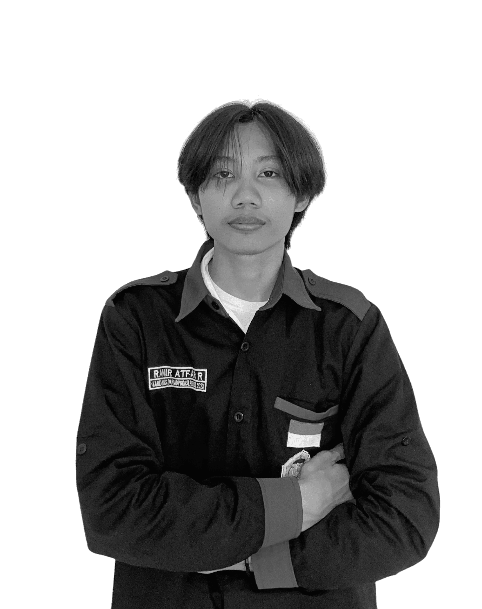

Tentang saya

Fast Learner & Mudah Beradaptasi
Bukti nyata dari kuliah, lapangan, dan organisasi.
Proyek
Perjalanan
Pendidikan, pengalaman lapangan, dan organisasi.
Prestasi dan karya
Prestasi
Publikasi dan HKI
Satu orang, banyak bidang
ρ
Pertanyaan umum
Mari berkolaborasi
Punya survei, alat, atau aplikasi yang ingin diwujudkan? Ceritakan kebutuhanmu.
mailKirim pesanInstagram @atfar.rnr dan YouTube atfarrnr